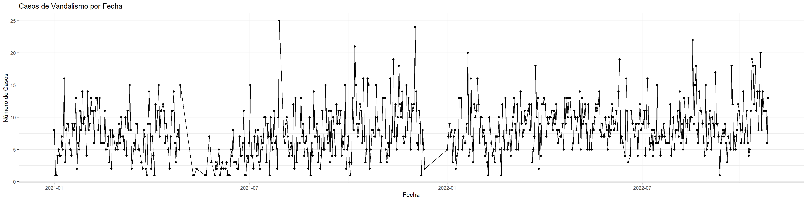
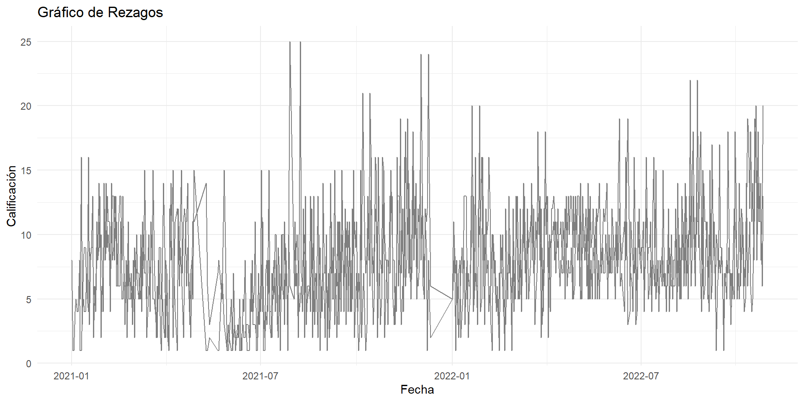
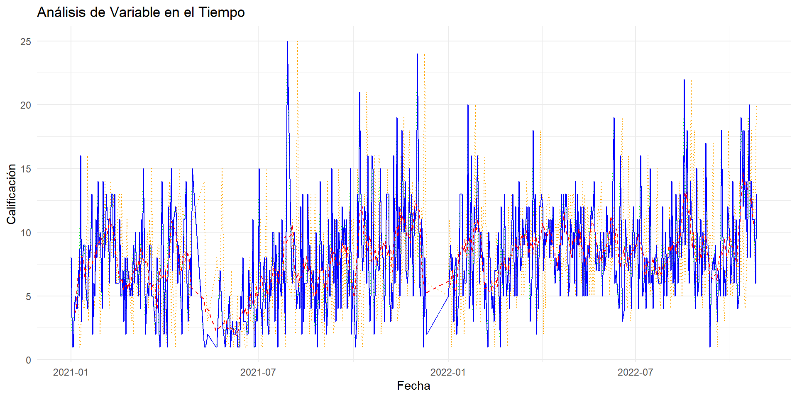

2 Estructura de los datos en series de tiempo
La estructura de los datos en series de tiempo es fundamental para el análisis y modelado adecuados de los patrones temporales en los datos. Los datos de serie de tiempo son observaciones registradas en momentos específicos a lo largo del tiempo.
En el presente cápitulo abordaremos el análisis de la información contenida en la base de datos de vandalismos suministrada por el ente gestor del sistema de transporte masivo MIO, con el fin de verificar en primera instancia los valores contenidos, información relevante y estructura del dataset.
La estructura de los datos en series de tiempo se basa en la secuencia temporal de observaciones de una variable específica. Entender esta estructura es esencial para aplicar técnicas de análisis y modelado de series de tiempo de manera efectiva.
Comenzamos el proceso al acceder a la base de datos de vandalismos, que contiene información correspondiente de vandalismos a la flota del SITM MIO de los años 2021 y 2022.
vandalismo <- read_excel("vandalismo.xlsx")2.1 Aproximación en promedio Móvil
En el análisis de series temporales, el método de medias móviles tiene variadas aplicaciones, así, este método puede sernos útil si queremos calcular la tendencia de la serie temporal sin tener que ajustarnos a una función previa, ofreciendo así una visión suavizada de una serie, ya que promediando varios valores se elimina parte de los movimientos irregulares de la serie; también puede servirnos para realizar predicciones cuando la tendencia de la serie tiene una media constante.
Permite observar y resaltar tendencias subyacentes o patrones cíclicos al calcular el promedio de un conjunto de valores en un intervalo móvil de tiempo, por lo que esta técnica es especialmente útil para eliminar el ruido y las fluctuaciones aleatorias en los datos, lo que puede hacer que los patrones temporales sean más visibles.
A continuación, se presenta el proceso de estructuración de la secuencia del conjunto de datos con el objetivo de identificar las fechas relevantes y determinar la columna base necesaria para la posterior creación de una gráfica de serie, en el fragmento de código en lenguaje R que sigue, se ilustra cómo se lleva a cabo esta tarea:
Fecha <- seq(as.Date("2021-01-01"), as.Date("2022-10-26"), by = "days", each = 1)
datos_sumados <- aggregate(Calificación ~ Fecha, data = vandalismo, sum)En este fragmento, se procede a generar una secuencia de fechas de acuerdo a la información revisada incialmente al llamar el dataset, abarca desde enero de 2021 hasta octubre de 2022 con una frecuencia diaria.
Se plantea a continuación como objetivo proporcionar una visualización gráfica de los datos en bruto contenidos en el conjunto de datos,esto se realiza para obtener una representación visual que permita identificar patrones y tendencias en las variables involucradas.
grafico <- ggplot(datos_sumados, aes(x = Fecha, y = Calificación)) +
geom_line() + # Línea para conectar los puntos
geom_point() + # Puntos en cada fecha
labs(x = "Fecha", y = "Número de Casos", title = "Casos de Vandalismo por Fecha") +
theme_bw()
print(grafico)
Procederemos a calcular el promedio móvil de la columna “Calificación” en un intervalo específico dentro del período desde enero de 2021 hasta octubre de 2022.
# Función de promedio móvil en un intervalo
promedio_movil <- function(datos_sumados, Calificación, intervalo) {
datos_sumados %>%
mutate(promedio = rollmean(Calificación, intervalo, fill = NA))
}La función rollmean() se aplica a la columna “Calificación” con el intervalo especificado, calculando así el promedio móvil.
# Calcular promedio móvil con intervalo de 7 días
data_con_promedio <- promedio_movil(datos_sumados, "Calificación", 7)
knitr::kable(head(data_con_promedio, 50), caption = "Base de Datos Vandalismos FLOTA")| Fecha | Calificación | promedio |
|---|---|---|
| 2021-01-01 | 8 | NA |
| 2021-01-02 | 1 | NA |
| 2021-01-03 | 1 | NA |
| 2021-01-04 | 4 | 3.857143 |
| 2021-01-05 | 5 | 3.714286 |
| 2021-01-06 | 4 | 4.285714 |
| 2021-01-07 | 4 | 6.428571 |
| 2021-01-08 | 7 | 6.285714 |
| 2021-01-09 | 5 | 6.714286 |
| 2021-01-10 | 16 | 7.428571 |
| 2021-01-11 | 3 | 8.142857 |
| 2021-01-12 | 8 | 8.000000 |
| 2021-01-13 | 9 | 8.000000 |
| 2021-01-14 | 9 | 6.285714 |
| 2021-01-15 | 6 | 7.142857 |
| 2021-01-16 | 5 | 7.142857 |
| 2021-01-17 | 4 | 7.142857 |
| 2021-01-18 | 9 | 7.714286 |
| 2021-01-19 | 8 | 7.142857 |
| 2021-01-20 | 9 | 7.285714 |
| 2021-01-21 | 13 | 7.428571 |
| 2021-01-22 | 2 | 7.714286 |
| 2021-01-23 | 6 | 7.714286 |
| 2021-01-24 | 5 | 8.428571 |
| 2021-01-25 | 11 | 7.857143 |
| 2021-01-26 | 8 | 9.000000 |
| 2021-01-27 | 14 | 9.285714 |
| 2021-01-28 | 9 | 9.142857 |
| 2021-01-29 | 10 | 9.571429 |
| 2021-01-30 | 8 | 9.571429 |
| 2021-01-31 | 4 | 8.857143 |
| 2021-02-01 | 14 | 9.428571 |
| 2021-02-02 | 8 | 9.571429 |
| 2021-02-03 | 9 | 10.000000 |
| 2021-02-04 | 13 | 10.285714 |
| 2021-02-05 | 11 | 9.857143 |
| 2021-02-06 | 11 | 10.571429 |
| 2021-02-07 | 6 | 11.142857 |
| 2021-02-08 | 11 | 10.428571 |
| 2021-02-09 | 13 | 10.714286 |
| 2021-02-10 | 13 | 10.000000 |
| 2021-02-11 | 8 | 10.000000 |
| 2021-02-12 | 13 | 9.285714 |
| 2021-02-13 | 6 | 8.285714 |
| 2021-02-14 | 6 | 8.000000 |
| 2021-02-15 | 6 | 7.571429 |
| 2021-02-16 | 6 | 6.428571 |
| 2021-02-17 | 11 | 6.571429 |
| 2021-02-18 | 5 | 6.142857 |
| 2021-02-19 | 5 | 6.428571 |
#data_con_promedioA continuación, se presenta el proceso de creación de la visualización en gráfica que incorpora tanto los valores originales de una columna como su respectivo promedio móvil, esta representación permite observar de manera efectiva cómo fluctúan los datos en relación con su tendencia promedio en un intervalo de tiempo de 7 días.
# Gráfico de Aproximación en Promedio Móvil
ggplot() +
geom_line(data = datos_sumados, aes(x = Fecha, y = Calificación), color = "blue", linetype = "solid") +
geom_line(data = data_con_promedio, aes(x = Fecha, y = promedio), color = "red", linetype = "dashed") +
labs(title = "Aproximación en Promedio Móvil", x = "Fecha", y = "Valor") +
theme_minimal()
A continuación se presenta una función esencial en el análisis de series temporales, enfocada en calcular los rezagos de una variable en un conjunto de datos, en el ámbito del análisis de series temporales, el cálculo de rezagos desempeña un papel crucial para comprender las relaciones entre observaciones pasadas y presentes en una secuencia temporal.
}
2.2 Calculo de los rezagos
calcular_rezagos <- function(datos_sumados, Calificación, pasos) {
datos_sumados %>%
mutate(across(.cols = Calificación, .fns = list(lag = ~lag(., pasos)), .names = "{col}_lag{pasos}"))
}Se inicia calculando los rezagos de 7 días en la columna “Calificación” del conjunto de datos “datos_sumados”, posteriormente se calculan los rezagos de 7 días en la columna “Calificación_lag7”, que ya contiene los rezagos de 7 días calculados en la etapa anterior; esto permite obtener los rezagos de 14 días.
Esta estrategia de calcular rezagos en etapas sucesivas es útil para analizar efectos a más largo plazo en la serie temporal.
# Calcular rezagos de 7 y 14 días
data_con_rezagos <- calcular_rezagos(datos_sumados, "Calificación", 7)
data_con_rezagos <- calcular_rezagos(data_con_rezagos, "Calificación_lag7", 7)names(data_con_rezagos)## [1] "Fecha" "Calificación" "Calificación_lag7"Se procede a realizar un gráfico que permite comparar los valores originales de una serie temporal con los rezagos de 7 días correspondientes.
ggplot(data_con_rezagos, aes(x = Fecha)) +
geom_line(aes(y = Calificación, color = "black")) +
geom_line(aes(y = Calificación_lag7, color = "red")) +
labs(title = "Gráfico de Rezagos",
y = "Calificación",
color = "Leyenda") +
scale_color_manual(values = c("Valor original" = "black",
"Rezago 7 días" = "red")) +
theme_minimal()
Procedemos crear un gráfico consolidado que permite comparar visualmente múltiples aspectos:
- Con “geom_line”, se agregan varias capas de líneas al gráfico:
-La primera línea representa los valores originales de la columna “Calificación” en color azul y con línea sólida.
-La segunda línea representa los valores del promedio móvil en color rojo y con línea punteada.
-Las dos siguientes líneas representan los valores originales y los rezagos de 7 días en color verde y naranja, respectivamente,ambas con línea punteada de una serie temporal a lo largo del tiempo.
2.3 Graficar los resultados Promedio y Rezagos
# Graficar los resultados
ggplot() +
geom_line(data = datos_sumados, aes(x = Fecha, y = Calificación), color = "blue", linetype = "solid") +
geom_line(data = data_con_promedio, aes(x = Fecha, y = promedio), color = "red", linetype = "dashed") +
geom_line(data = data_con_rezagos, aes(x = Fecha, y = Calificación), color = "green", linetype = "dotted") +
geom_line(data = data_con_rezagos, aes(x = Fecha, y = Calificación_lag7), color = "orange", linetype = "dotted") +
labs(title = "Análisis de Variable en el Tiempo", x = "Fecha", y = "Calificación") +
theme_minimal()